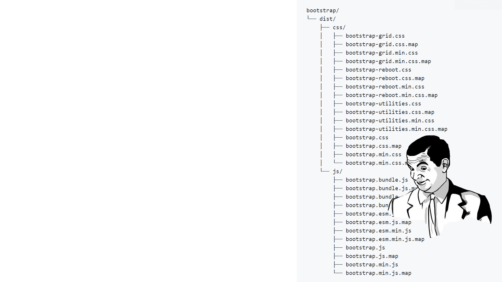
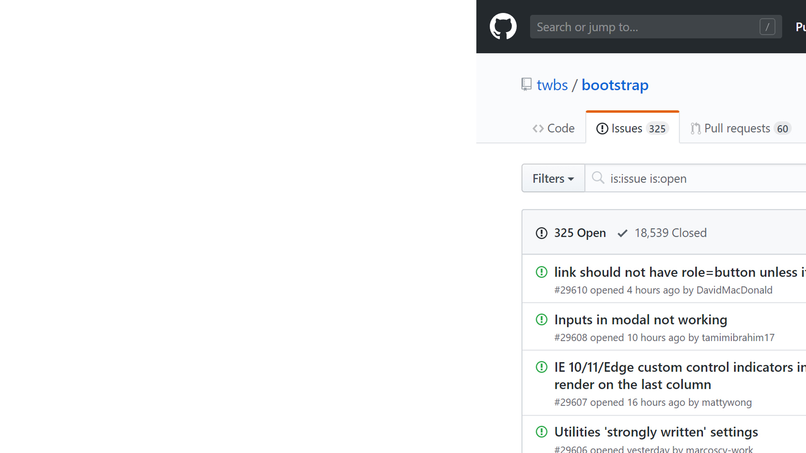
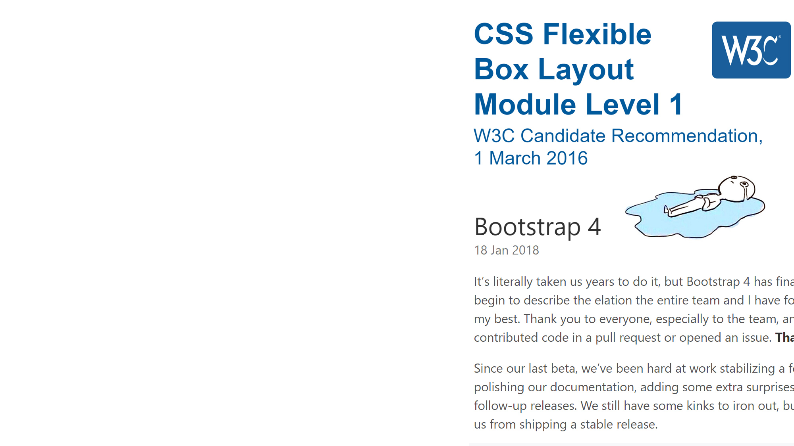
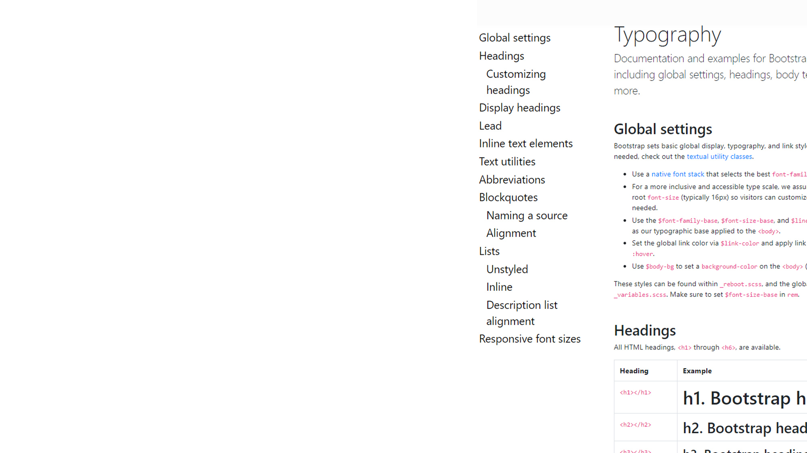
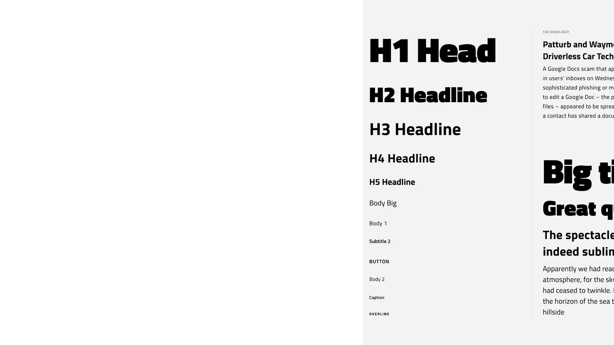
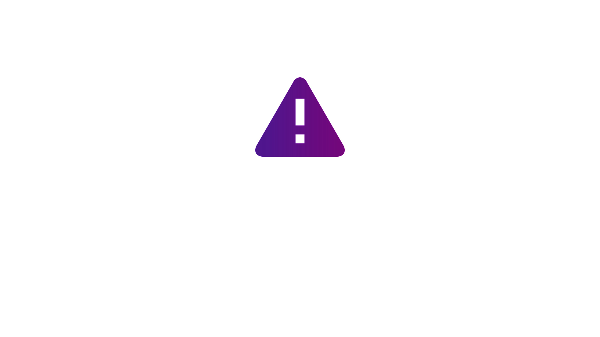

Тебе не нужен Bootstrap! Или нужен? Или все же не нужен?
Тебе не нужен Bootstrap!
Или нужен? Или все же не нужен?
Александра Шинкевич
@neesoglasnaja

Bootstrap - это...
- Библиотека компонентов
- CSS фреймворк
- UI библиотека
в какой-то момент все поменялось
Убить Bootstrap
https://www.fourkitchens.com/blog/article/you-dont-need-bootstrap/
https://www.butterfly.com.au/blog/website-development/bootstrap-why-we-dont-use-the-framework-devs-are-raving-about
https://dev.to/teamxenox/do-we-really-need-a-css-framework-4ma6
https://frontendmasters.com/courses/advanced-css-layouts/refactoring-a-grid-system-bootstrap-is-dead/
https://2019.stateofcss.com/technologies/css-frameworks/#bootstrap
https://medium.com/@stasonmars/%D0%BA%D0%B0%D0%BA-%D1%8F-%D0%BF%D0%B5%D1%80%D0%B5%D1%81%D1%82%D0%B0%D0%BB-%D0%B8%D1%81%D0%BF%D0%BE%D0%BB%D1%8C%D0%B7%D0%BE%D0%B2%D0%B0%D1%82%D1%8C-bootstrap-%D0%B2-%D1%83%D0%B3%D0%BE%D0%B4%D1%83-css-grid-3e351e97425f
https://hacks.mozilla.org/2016/04/you-might-not-need-a-css-framework/
http://www.zingdesign.com/5-reasons-not-to-use-twitter-bootstrap/
https://borealis.agency/stopped-using-bootstrap/255
Почему не нужен Bootstrap?
Проблемы Open Source
#плохо
Проблемы Open Source
- Есть только то, что есть
- Инертность
- Отставание от стандартов
.btn {
/* ... */
cursor: if($enable-pointer-cursor-for-buttons, pointer, null);
@include button-size($btn-padding-y, $btn-padding-x,
$btn-font-size, $btn-border-radius);
}
https://imgflip.com/s/meme/Jackie-Chan-WTF.jpg
пример important который не работает
Методология наименования
#плохо
пример классов в разметке
Использовать Bootstrap в 2019?
Почему Bootstrap
- Просто, быстро и удобно копипастить - хорошие доки
- Большой набор базовых компонентов
- Выглядит презентабельно из коробки
- Только HTML, CSS и JavaScript (jQuery)
Версии для JS фреймворков...
...полностью переписаны!
Типографика
UI kit по заголовкам и текстовым стилям

Сделай UI Kit со стилями типографики
#justdoit

Верстай
доступно
#justdoit
Макетные сетки
=
визуальный порядок
Расскажи дизайнеру о сетках
RWD и MF
#ну_ok
*Responsive Web Design и Mobile First
https://gs.statcounter.com/platform-market-share/desktop-mobile-tablet
Mobile First и Desktop First
/* Mobile First */
@media (min-width: ...) { ... }
/* Desktop First */
@media (max-width: ...) { ... }
https://habr.com/ru/post/473186/
Начни делать Mobile First!
#justdoit
https://klondike-studio.ru/images/wiki/development/crossbrowsers.jpg
https://getbootstrap.com/docs/4.3/getting-started/browsers-devices/
Исходники Bootstrap как вдохновение
#justdoit
Хочу ... от Bootstrap. Как правильно?
А если превратить любой проект в UI библиотеку?
Плохой дизайн сложно превратить в хороший CSS фреймворк

Без UI Kit...

...всё будет ОЧЕНЬ ПЛОХО

Из чего состоит Oopstrap
- Код рабочего проекта
- Документация
Проект состоит из...
- Настроек проекта
- Глобальных стилей, переменных
- Макетных сеток и раскладки
- Типографики и стилей контента
- Компонентов
Неструктурированный код сложно в хороший CSS фреймворк
DRY

https://wsd.events/2016/10/29/pres/custom-properties/#7
Эра flex
Нужен только класс-контейнер (и то не всегда)
Высчитывать все эти колонки, остпуты... Долго и неинтересно!
css grid
Создание сетки в несколько строк
р Подержка браузеров позволяет использовать в проде https://caniuse.com/#feat=css-grid
css grid
Пример с 12 колонками в несколько строк
Вот и не нужен подход с atomicCSS, когда стили пишутся классами в разметке
А еще гриды умеют в адаптив (пример как)
Типографика и контент
Воруй как художник, если дизайнер это еще не сделал за тебя
Тулзы для подбора типографики
Можно и вертикальный ритм подключить, это не сложно
responsive images
В Bootstrap есть поддержка тега picture - это круто
Но ничего не говорится от src-set, т.е. об адаптивных изображениях
р А это классная техника уменьшения трафика пользователя
Компоненты
Неужто сложно наверстать такие компоненты как...
Alerts, Badges, Buttons, Progress, Spinners и еще несколько десятков такой же ерунды?
А что про JS компоненты?
Камон, ну что мало ли каруселек без jQuery, с a11y?
В редких проектах нужнен весь список доступных JS компонентов Bootstrap
А если и так, то они часто выглядят отнюдь не так, как в популярном фреймворке
dialog
р Полноценные модальный элемент
Пока сложно использовать из-за низкой поддержки https://caniuse.com/#feat=dialog
р Доклад Ани Селезневой https://www.youtube.com/watch?v=s6PI8pKQxgo
Утилитарные класы
Ресеты стилей
Простой повторяющийся код вынесен в переменные еще несколько этапов назад
Большинству проектов достаточно парочки таких классов как visibility-hidden, display-none и т.д.
А остальное - в утиль. Вот серьезно, зачему 20 классов border, если граница задается один свойством?!
Вуаля!
- CSS библиотека, заточенная под конкретный проект
- Со встроенной документацией
- С конкретными примерами компонентов конкретного проекта
- Сторонние библиотеки не запрещены
Когда брать чужое?
- Разрабатывается быстрый прототип
- Дизайн "заточен" под выбранную UI библиотеку
- Нет дизайна
- Вы не умеете верстать
- Просто лень
Подводя итог
- Хватит ненавидеть библиотеки "потому что модно"
- Пользуйся инструментами осознанно
- Знай возможности современных CSS, HTML и JS
Подводя итог
- Хватит ненавидеть библиотеки "потому что модно"
- Пользуйся инструментами осознанно
- Знай возможности современных CSS, HTML и JS
- Не переставай учиться